Setup
Load Libraries:
Load and clean a dataset:
data("penguins", package = "modeldata")
penguins <- penguins %>%
select(bill_length_mm, bill_depth_mm) %>%
drop_na()
# shuffle rows
penguins <- penguins %>%
sample_n(nrow(penguins))At the end of this vignette, you will find a brief overview of the GMM algorithm and examples of each GMM model specification.
gm_clust specification in {tidyclust}
To specify a GMM model in tidyclust, set the value for
num_clusters and use the TRUE/FALSE parameters to select
which model specification to use:
gm_clust_spec <- gm_clust(
num_clusters = 3,
circular = FALSE,
zero_covariance = FALSE,
shared_orientation = TRUE,
shared_shape = FALSE,
shared_size = FALSE
)
gm_clust_spec
#> GMM Clustering Specification (partition)
#>
#> Main Arguments:
#> num_clusters = 3
#> circular = FALSE
#> zero_covariance = FALSE
#> shared_orientation = TRUE
#> shared_shape = FALSE
#> shared_size = FALSE
#>
#> Computational engine: mclustThere is currently one engine: mclust::Mclust
(default)
Fitting gm_clust models
After specifying the model specification, we fit the model to data in the usual way:
gm_clust_fit <- gm_clust_spec %>%
fit( ~ bill_length_mm + bill_depth_mm,
data = penguins
)
gm_clust_fit %>%
summary()
#> Length Class Mode
#> spec 4 gm_clust list
#> fit 16 Mclust list
#> elapsed 1 -none- list
#> preproc 4 -none- listWe can also extract the standard tidyclust summary
list:
gm_clust_summary <- gm_clust_fit %>% extract_fit_summary()
gm_clust_summary %>% str()
#> List of 7
#> $ cluster_names : Factor w/ 3 levels "Cluster_1","Cluster_2",..: 1 2 3
#> $ centroids : tibble [3 × 2] (S3: tbl_df/tbl/data.frame)
#> ..$ bill_length_mm: num [1:3] 47.6 38.8 48.9
#> ..$ bill_depth_mm : num [1:3] 15 18.3 18.5
#> $ n_members : int [1:3] 122 153 67
#> $ sse_within_total_total: num [1:3] 328 385 186
#> $ sse_total : num 1803
#> $ orig_labels : NULL
#> $ cluster_assignments : Factor w/ 3 levels "Cluster_1","Cluster_2",..: 1 1 2 1 2 1 2 1 1 3 ...Cluster assignments and centers
The cluster assignments for the training data can be accessed using
the extract_cluster_assignment() function.
gm_clust_fit %>% extract_cluster_assignment()
#> # A tibble: 342 × 1
#> .cluster
#> <fct>
#> 1 Cluster_1
#> 2 Cluster_1
#> 3 Cluster_2
#> 4 Cluster_1
#> 5 Cluster_2
#> 6 Cluster_1
#> 7 Cluster_2
#> 8 Cluster_1
#> 9 Cluster_1
#> 10 Cluster_3
#> # ℹ 332 more rowsIf you have not yet read the k_means vignette, we
recommend reading that first; functions that are used in this vignette
are explained in more detail there.
Centroids
The centroids for the fitted clusters can be accessed via
extract_centroids():
gm_clust_fit %>% extract_centroids()
#> # A tibble: 3 × 3
#> .cluster bill_length_mm bill_depth_mm
#> <fct> <dbl> <dbl>
#> 1 Cluster_1 47.6 15.0
#> 2 Cluster_2 38.8 18.3
#> 3 Cluster_3 48.9 18.5Prediction
For GMMs each cluster is modeled as a multivariate normal
distribution. This makes prediction easy since we can calculate the
probability that each point belongs to each of the fitted clusters.
Therefore, it is natural for the predict() function to
assign new observations to the cluster in which they have the highest
probability of belonging to.
Gaussian Mixture Model Specifications
| Model Name | Circular Clusters? | Zero Covariance? | Shared Orientation? | Shared Shape? | Shared Size? | Example |
|---|---|---|---|---|---|---|
| EII | TRUE | – | – | – | TRUE | 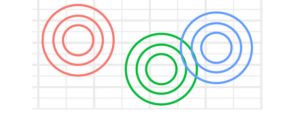 |
| VII | TRUE | – | – | – | FALSE | 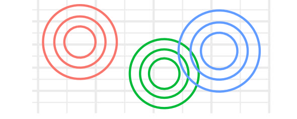 |
| EEI | FALSE | TRUE | – | TRUE | TRUE | 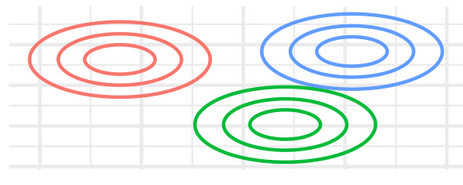 |
| EVI | FALSE | TRUE | – | FALSE | TRUE | 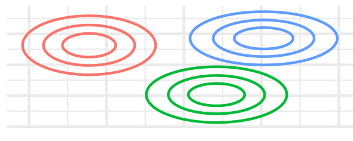 |
| VEI | FALSE | TRUE | – | TRUE | FALSE | 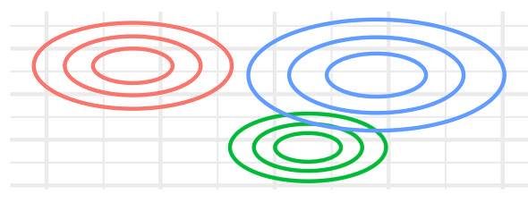 |
| VVI | FALSE | TRUE | – | FALSE | FALSE | 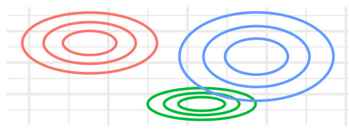 |
| EEE | FALSE | FALSE | TRUE | TRUE | TRUE | 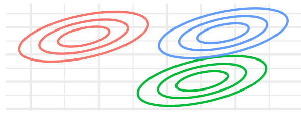 |
| EVE | FALSE | FALSE | TRUE | FALSE | TRUE | 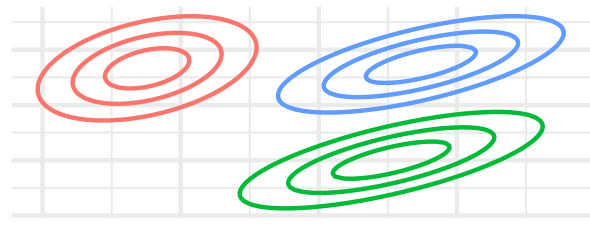 |
| VEE | FALSE | FALSE | TRUE | TRUE | FALSE | 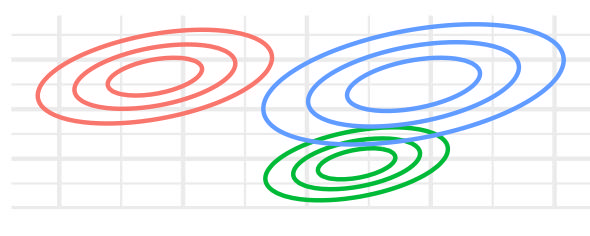 |
| VVE | FALSE | FALSE | TRUE | FALSE | FALSE | 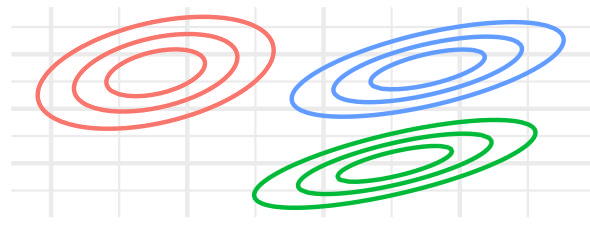 |
| EEV | FALSE | FALSE | FALSE | TRUE | TRUE | 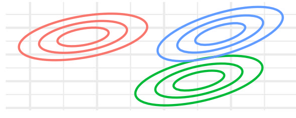 |
| EVV | FALSE | FALSE | FALSE | FALSE | TRUE | 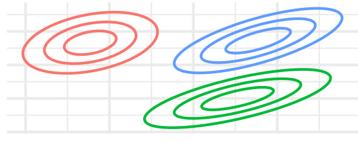 |
| VEV | FALSE | FALSE | FALSE | TRUE | FALSE | 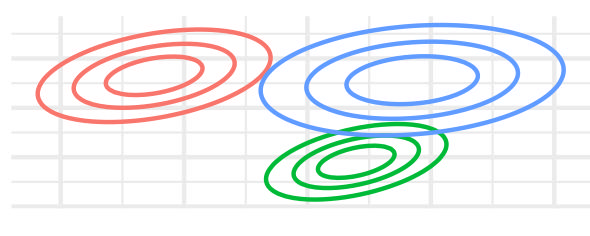 |
| VVV | FALSE | FALSE | FALSE | FALSE | FALSE | 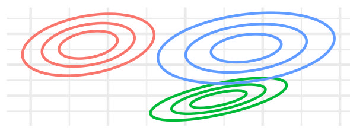 |
A brief introduction to density-based clustering
Gaussian Mixture Models (GMM) is a probabilistic unsupervised learning method that models data as a mixture of multiple Gaussian distributions. Unlike clustering methods such as k-means, GMM provides a soft clustering approach, where each observation has a probability of belonging to multiple clusters. This allows for more flexibility in capturing complex data distributions.
In GMM, observations are assumed to be generated from a combination of Gaussian distributions, each with some mean vector and variance-covariance matrix. The algorithm works by iteratively estimating these parameters for each cluster using the Expectation-Maximization (EM) algorithm. After estimating these parameters observations are assigned to clusters based on their probability of belonging to each Gaussian component.
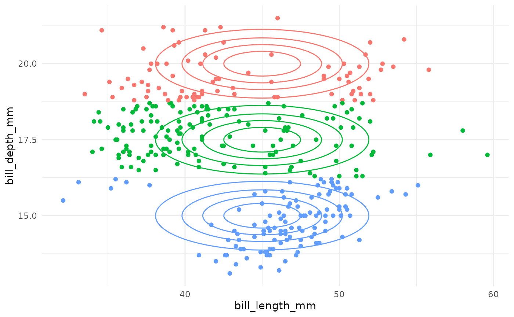
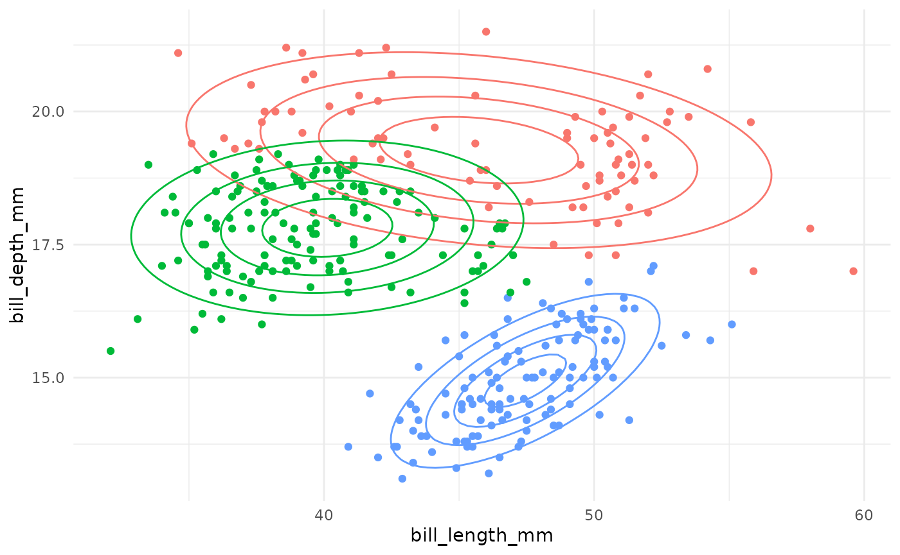
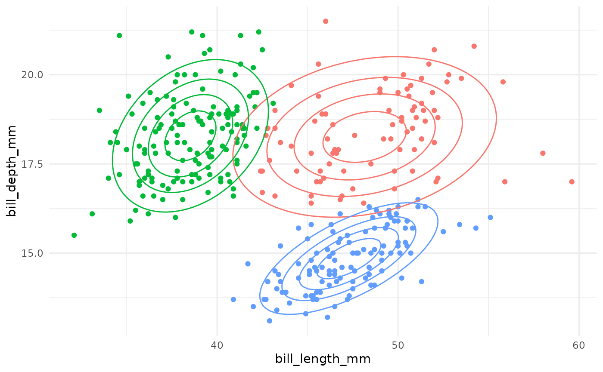
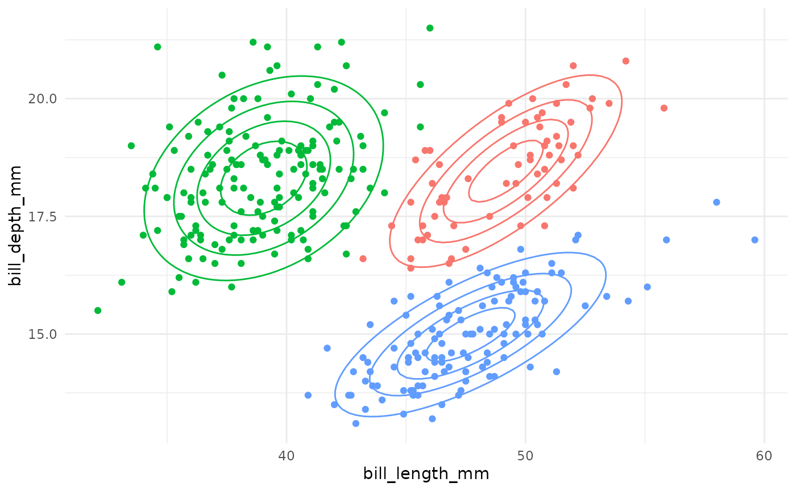